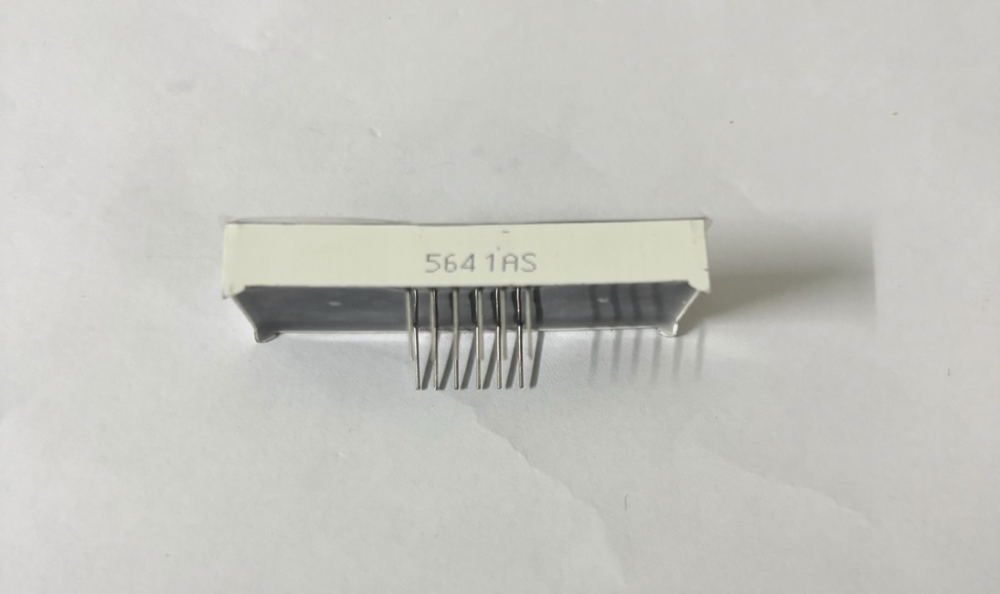
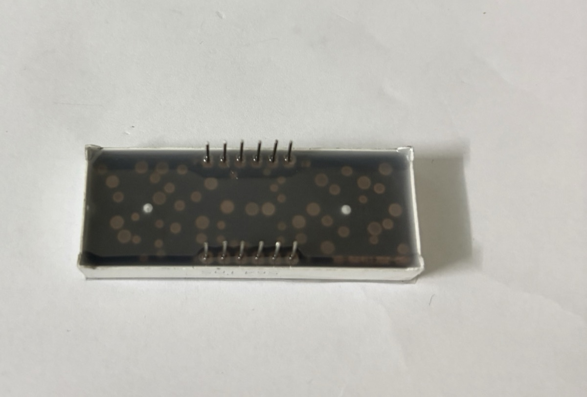
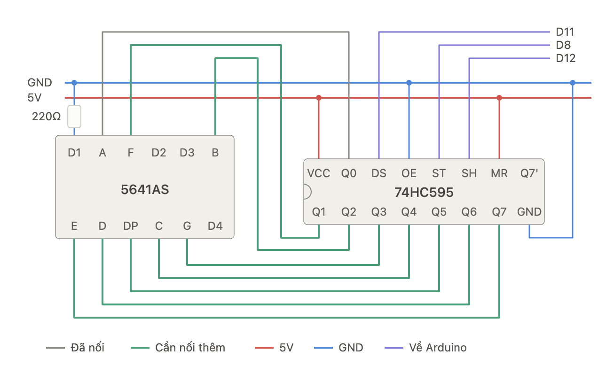
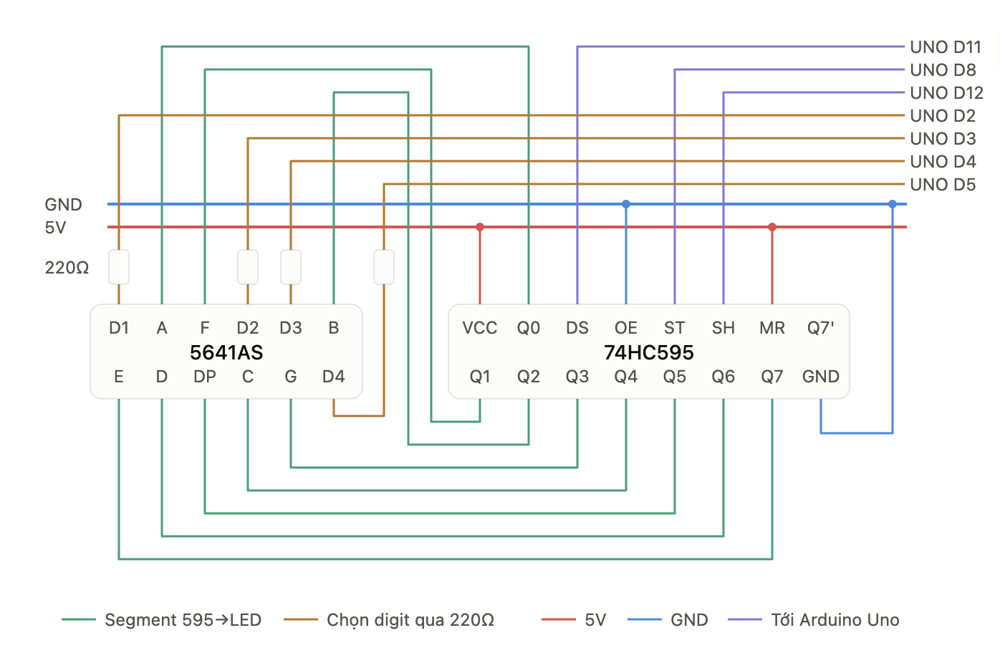
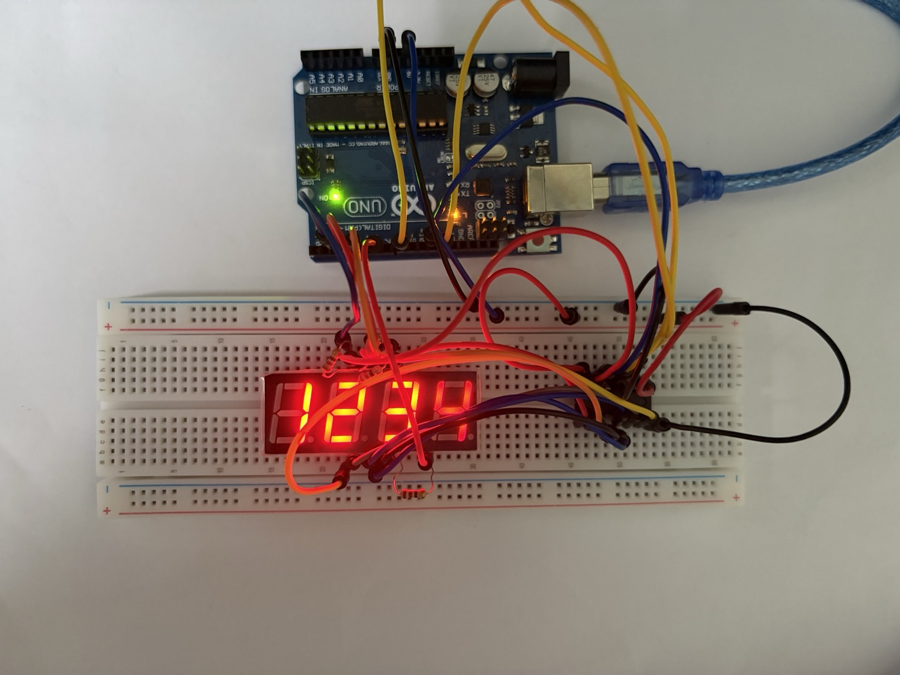

Lab 7 · LED 7 đoạn 4 số 5641AS + IC 74HC595
Lab 7 · LED 7 đoạn 4 số 5641AS + IC 74HC595
Hiển thị số trên LED 7 đoạn 4 số 5641AS với Arduino Uno. Lab giải thích sơ đồ chân và cách quét (multiplexing), nối trực tiếp 12 chân với thư viện
SevSeg, rồi dùng IC dịch 74HC595 để Arduino chỉ cần 3 dây cho 8 chân đoạn. Đây là lab đầu tiên dùng thanh ghi dịch để mở rộng số chân ra.
LED 7 đoạn 4 số là gì
Bốn chữ số LED 7 đoạn chung một vỏ, cỡ chữ 0,56 inch. Mỗi chữ số có 7 đoạn A–G và một dấu chấm DP:
A
───
F │ │ B
─G─
E │ │ C
─── • DP
DHậu tố trong mã cho biết kiểu chung chân:
- 5641AS: cathode chung (common cathode). Mỗi chữ số có một chân chung nối về phía âm. Đoạn sáng khi chân đoạn
HIGHvà chân chữ sốLOW. - 5641BS: anode chung, logic ngược lại. Hai mã trông giống hệt nhau, chỉ khác chữ
A/Bin ở cạnh vỏ.
Ảnh thực tế module

DP ở góc dưới bên phải
5641AS, chân cắm hướng xuống
Module trong kit in mã 5641AS trên một cạnh dài, nên đây là loại cathode chung. Chữ số màu đỏ, vỏ trắng, mặt hiển thị đen.
- Cạnh có in mã nằm cùng phía với các dấu chấm
DP(nhìn ảnh mặt trước, mã in ngay dưới hàng chấm). Phía này là hàng chân 1 → 6. Hàng chân sát cạnh còn lại là 7 → 12. - 12 chân nằm gọn ở giữa thân, hai hàng cách nhau khá xa. Cắm module bắc ngang rãnh giữa breadboard, mỗi hàng chân nằm ở một nửa board, để 12 chân không bị chập vào nhau.
- Thân module rộng, che mất khá nhiều lỗ breadboard. Nên cắm dây vào các lỗ còn trống ở hai đầu cột chân trước rồi mới ấn module xuống.
Sơ đồ chân
12 chân, chia hai hàng 6 chân. Đặt module sao cho dấu chấm DP ở phía dưới, nhìn mặt trước: chân 1 ở góc dưới bên trái, đánh số ngược chiều kim đồng hồ (1 → 6 hàng dưới từ trái sang phải, 7 → 12 hàng trên từ phải sang trái).
| Hàng trên (12 → 7) | 12 D1 |
11 A |
10 F |
9 D2 |
8 D3 |
7 B |
|---|---|---|---|---|---|---|
| Hàng dưới (1 → 6) | 1 E |
2 D |
3 DP |
4 C |
5 G |
6 D4 |
D1–D4 là 4 chân chung của 4 chữ số (D1 = chữ số bên trái). 8 chân còn lại là chân đoạn, dùng chung cho cả 4 chữ số: chân A nối với đoạn A của cả 4 số.
Kiểm tra kiểu chung chân bằng đồng hồ ở thang đo diode: que đỏ vào chân 11 (A), que đen vào chân 12 (D1). Đoạn A của số đầu tiên sáng mờ → cathode chung (5641AS). Phải đảo que mới sáng → anode chung.
Quét (multiplexing)
Vì chân đoạn dùng chung, tại một thời điểm chỉ bật được một chữ số. Chương trình bật lần lượt D1 → D2 → D3 → D4, mỗi số khoảng 2–5 ms, lặp liên tục. Mắt không kịp thấy nhấp nháy nên cả 4 số trông như sáng cùng lúc. Hệ quả:
- Không được dùng
delay()dài trongloop(), nếu không màn sẽ chỉ hiện một số hoặc nhấp nháy. Đo thời gian bằngmillis(). - Mỗi chữ số chỉ sáng ~1/4 thời gian, nên trông mờ hơn LED đơn dùng cùng điện trở.
Cách 1 · Nối trực tiếp với Arduino
Nối dây với Arduino Uno (tốn 12 chân):
| Chân 5641AS | Nối Arduino |
|---|---|
A B C D E F G DP |
2 3 4 5 6 7 8 9, mỗi chân qua một điện trở 220 Ω – 1 kΩ |
D1 D2 D3 D4 |
10 11 12 13, nối thẳng |
Đặt điện trở ở chân đoạn, không đặt ở chân chữ số: nếu chỉ có một điện trở trên chân chung thì số “1” (2 đoạn) sẽ sáng hơn hẳn số “8” (7 đoạn). Chân chữ số phải hút dòng của tối đa 8 đoạn cùng lúc; với 1 kΩ (~3 mA/đoạn) là ~24 mA, vẫn trong giới hạn chân Uno. Nếu dùng 220 Ω cho sáng hơn thì nên đệm chân chữ số bằng transistor NPN (ví dụ 2N2222).
Code dùng thư viện SevSeg (cài từ Library Manager). Thư viện tự lo việc quét; chỉ cần gọi refreshDisplay() thật thường xuyên trong loop():
#include <SevSeg.h>
SevSeg sevseg;
void setup() {
byte numDigits = 4;
byte digitPins[] = {10, 11, 12, 13}; // D1 D2 D3 D4
byte segmentPins[] = {2, 3, 4, 5, 6, 7, 8, 9}; // A B C D E F G DP
bool resistorsOnSegments = true; // điện trở đặt ở chân đoạn
sevseg.begin(COMMON_CATHODE, numDigits, digitPins, segmentPins,
resistorsOnSegments);
sevseg.setBrightness(90);
}
void loop() {
static unsigned long last = 0;
static int tenths = 0; // đếm 0,1 giây
if (millis() - last >= 100) { // không dùng delay()
last += 100;
tenths = (tenths + 1) % 10000;
sevseg.setNumber(tenths, 1); // 1 chữ số thập phân: 123.4
}
sevseg.refreshDisplay(); // gọi mỗi vòng loop
}Với loại 5641BS chỉ cần đổi COMMON_CATHODE thành COMMON_ANODE.
Cách này tốn 12/20 chân của Uno, gần như không còn chỗ cho cảm biến khác. Hai cách tiết kiệm chân: IC dịch 74HC595 cho 8 chân đoạn (phần dưới), hoặc module có sẵn chip TM1637 (chỉ 2 dây tín hiệu).
Cách 2 · Dùng IC 74HC595
74HC595 là thanh ghi dịch 8 bit: Arduino gửi 8 bit nối tiếp qua một dây dữ liệu, mỗi bit kèm một xung clock, rồi phát một xung chốt (latch) để cả 8 bit cùng xuất ra 8 chân Q0–Q7. Arduino chỉ cần 3 dây (dữ liệu, clock, chốt) thay vì 8. Bản thử này mới bật chữ số đầu tiên.

Nối dây
74HC595 ↔︎ nguồn và Arduino:
| Chân 74HC595 | Tên khác | Nối | Vai trò |
|---|---|---|---|
VCC (16) |
5V |
Nguồn | |
GND (8) |
GND |
Mass | |
DS (14) |
SER, data |
Arduino 11 |
Dữ liệu nối tiếp, từng bit một |
SH (11) |
SH_CP, SRCLK, clock |
Arduino 12 |
Mỗi cạnh lên đẩy một bit vào thanh ghi dịch |
ST (12) |
ST_CP, RCLK, latch |
Arduino 8 |
Cạnh lên chép 8 bit ra các chân Q0–Q7 cùng lúc |
OE (13) |
GND |
Luôn bật ngõ ra (kích mức thấp) | |
MR (10) |
SRCLR |
5V |
Không xoá thanh ghi (kích mức thấp) |
Q7' (9) |
để trống | Dùng để nối tiếp sang một 74HC595 thứ hai |
74HC595 ↔︎ 5641AS. Thứ tự chân Q được chọn sao cho dây trên breadboard đi gọn, không theo thứ tự A → G:
Q0 |
Q1 |
Q2 |
Q3 |
Q4 |
Q5 |
Q6 |
Q7 |
|---|---|---|---|---|---|---|---|
A |
F |
B |
G |
C |
DP |
D |
E |
Chân chữ số D1 nối xuống GND qua một điện trở 220 Ω, nên chữ số đầu luôn được bật. D2–D4 để trống nên ba số còn lại tắt. Vì chỉ có một điện trở chung cho cả 8 đoạn, số nào ít đoạn sáng (số 1) sẽ sáng hơn số nhiều đoạn (số 8). Như vậy đủ để thử mạch. Bản đủ 4 số ở phần sau nối cả D1–D4 về Arduino để quét.
Code
Vì thứ tự chân không theo A → G, bảng mã số phải tính theo đúng cách nối: bit 0 = Q0 = A, bit 1 = Q1 = F, … Ví dụ số 5 sáng A F G C D = bit 0, 1, 3, 4, 6 = 0b01011011. Code dưới đây đếm 0 → 9 trên chữ số đầu tiên, mỗi số 1 giây:
const int DATA_PIN = 11; // DS
const int LATCH_PIN = 8; // ST
const int CLOCK_PIN = 12; // SH
// bit: 7 6 5 4 3 2 1 0
// đoạn: E D DP C G B F A (theo cách nối Q0–Q7 ở trên)
const byte DIGITS[10] = {
0b11010111, // 0
0b00010100, // 1
0b11001101, // 2
0b01011101, // 3
0b00011110, // 4
0b01011011, // 5
0b11011011, // 6
0b00010101, // 7
0b11011111, // 8
0b01011111, // 9
};
void show(byte pattern) {
digitalWrite(LATCH_PIN, LOW);
shiftOut(DATA_PIN, CLOCK_PIN, MSBFIRST, pattern); // bit 7 đi trước, cuối cùng nằm ở Q7
digitalWrite(LATCH_PIN, HIGH); // chốt: 8 chân Q đổi cùng lúc
}
void setup() {
pinMode(DATA_PIN, OUTPUT);
pinMode(LATCH_PIN, OUTPUT);
pinMode(CLOCK_PIN, OUTPUT);
}
void loop() {
for (int n = 0; n <= 9; n++) {
show(DIGITS[n]);
delay(1000); // chỉ có 1 chữ số, không cần quét nên dùng delay() được
}
}Muốn bật dấu chấm thì thêm bit 5: show(DIGITS[n] | 0b00100000);.
Video mạch thật (một số)
Chữ số đầu tiên đã sáng và hiển thị số 5:
Cách 2 (tiếp) · Quét đủ 4 số
Giữ nguyên phần 74HC595 ở trên, chỉ đổi cách nối 4 chân chữ số: thay vì D1 nối cố định xuống GND, cả D1–D4 đều nối về Arduino, mỗi chân qua một điện trở 220 Ω. Arduino kéo chân nào xuống LOW thì chữ số đó sáng.

Nối dây
Phần 74HC595 (nguồn, DS → 11, ST → 8, SH → 12, OE, MR) và 8 dây Q0–Q7 → chân đoạn giữ nguyên như bảng ở trên. Chỉ thêm 4 dây chọn chữ số:
| Chân 5641AS | Chân số trên module | Qua | Nối Arduino |
|---|---|---|---|
D1 (số trái nhất) |
12 | 220 Ω | 2 |
D2 |
9 | 220 Ω | 3 |
D3 |
8 | 220 Ω | 4 |
D4 (số phải nhất) |
6 | 220 Ω | 5 |
Mỗi lúc chỉ một chữ số bật, nên mỗi chân Arduino chỉ phải hút dòng của một chữ số: khoảng (5 V − 2 V) / 220 Ω ≈ 14 mA, trong giới hạn của chân Uno. Điện trở vẫn nằm ở chân chữ số (một điện trở cho cả 8 đoạn của số đó), nên số 1 vẫn sáng hơn số 8 một chút. Muốn độ sáng đều thì chuyển 4 điện trở này thành 8 điện trở trên 8 dây đoạn.
Code
Bảng DIGITS giữ nguyên vì thứ tự Q0–Q7 không đổi. Vòng loop() quét lần lượt 4 chữ số, mỗi số sáng khoảng 3 ms:
const int DATA_PIN = 11; // DS
const int LATCH_PIN = 8; // ST
const int CLOCK_PIN = 12; // SH
const int DIGIT_PINS[4] = {2, 3, 4, 5}; // D1 D2 D3 D4 (qua 220 Ω)
// bit: 7 6 5 4 3 2 1 0
// đoạn: E D DP C G B F A
const byte DIGITS[10] = {
0b11010111, 0b00010100, 0b11001101, 0b01011101, 0b00011110, // 0–4
0b01011011, 0b11011011, 0b00010101, 0b11011111, 0b01011111, // 5–9
};
void show(byte pattern) {
digitalWrite(LATCH_PIN, LOW);
shiftOut(DATA_PIN, CLOCK_PIN, MSBFIRST, pattern);
digitalWrite(LATCH_PIN, HIGH);
}
void setup() {
pinMode(DATA_PIN, OUTPUT);
pinMode(LATCH_PIN, OUTPUT);
pinMode(CLOCK_PIN, OUTPUT);
for (int i = 0; i < 4; i++) {
pinMode(DIGIT_PINS[i], OUTPUT);
digitalWrite(DIGIT_PINS[i], HIGH); // cathode chung: HIGH = tắt chữ số
}
}
void loop() {
int value = 1234; // thử đồng hồ đếm giây: (millis() / 1000) % 10000
int d[4] = { value / 1000 % 10, value / 100 % 10, value / 10 % 10, value % 10 };
for (int i = 0; i < 4; i++) {
show(DIGITS[d[i]]); // 1. đưa mẫu đoạn của chữ số i ra Q0–Q7
digitalWrite(DIGIT_PINS[i], LOW); // 2. bật chữ số i
delay(3); // 3. giữ sáng ~3 ms
digitalWrite(DIGIT_PINS[i], HIGH); // 4. tắt trước khi đổi mẫu, tránh "bóng ma"
}
}Một vòng quét 4 số mất khoảng 12 ms, tức hơn 80 lần mỗi giây, nên mắt không thấy nhấp nháy. Bước 4 quan trọng: nếu đổi mẫu đoạn khi chữ số cũ còn bật, số đó sẽ loé lên hình của số kế tiếp, để lại vệt mờ (ghosting).
delay(3) ở đây đủ ngắn nên không làm hỏng việc quét. Nếu loop() cần làm thêm việc khác (đọc cảm biến, đếm thời gian) thì nên bỏ delay(), dùng millis() để chuyển sang chữ số kế tiếp, như cách thư viện SevSeg ở Cách 1 làm.
Kết quả: cả 4 số cùng sáng

1234Màn hiện đủ 1234: 74HC595 lo 8 chân đoạn, Arduino dùng thêm 4 chân D2–D5 để chọn chữ số. Tổng cộng mạch tốn 7 chân Arduino, so với 12 chân ở Cách 1.
Lỗi hay gặp
| Hiện tượng | Nguyên nhân thường gặp |
|---|---|
| Không đoạn nào sáng | Chân chữ số chưa nối về GND, hoặc dùng nhầm module anode chung (5641BS). Thử bằng đồng hồ như ở phần sơ đồ chân |
Số hiện sai hình (ví dụ 5 ra ký tự lạ) |
Một dây Q → chân đoạn bị lắp lệch so với bảng nối. Thử lần lượt show(1 << k) với k = 0 → 7 để xem mỗi bit bật đúng đoạn nào |
| 74HC595 không xuất gì | OE chưa nối GND hoặc MR chưa nối 5V (để thả nổi thì IC chạy thất thường) |
| Cả 4 số hiện cùng một chữ số | Đang bật nhiều chân D cùng lúc, chưa quét. Mỗi lúc chỉ được một chân D ở mức LOW |
| Các số nhấp nháy hoặc chỉ một số sáng | Có delay() dài trong loop(). Cách 1: refreshDisplay() không được gọi đủ nhanh |
| Mỗi số có vệt mờ của số bên cạnh (ghosting) | Đổi mẫu đoạn khi chữ số cũ còn bật. Tắt chân D trước khi gọi show() |
Các số hiện đúng nhưng sai vị trí (4321) |
Thứ tự chân trong DIGIT_PINS không khớp D1–D4 trên module |